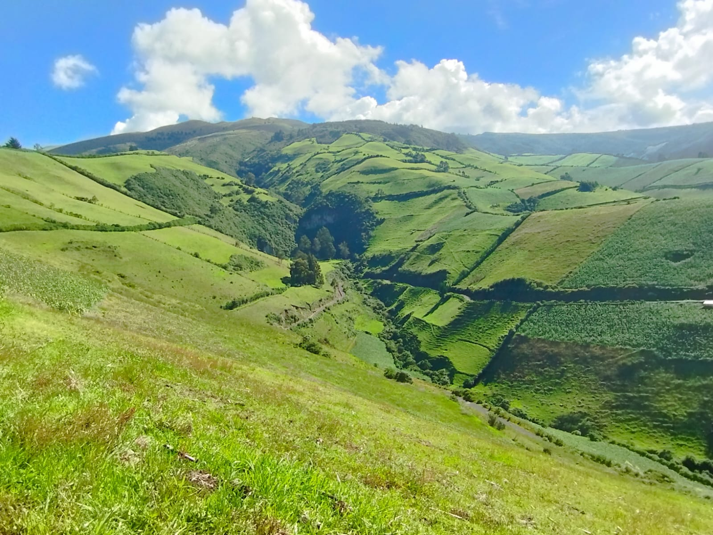
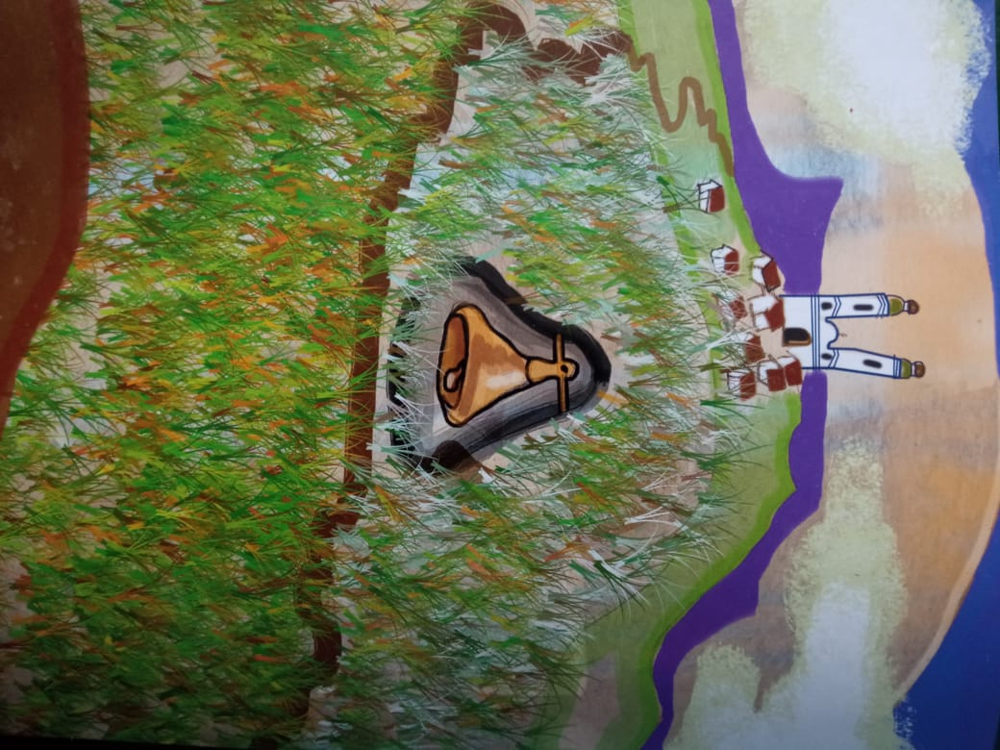
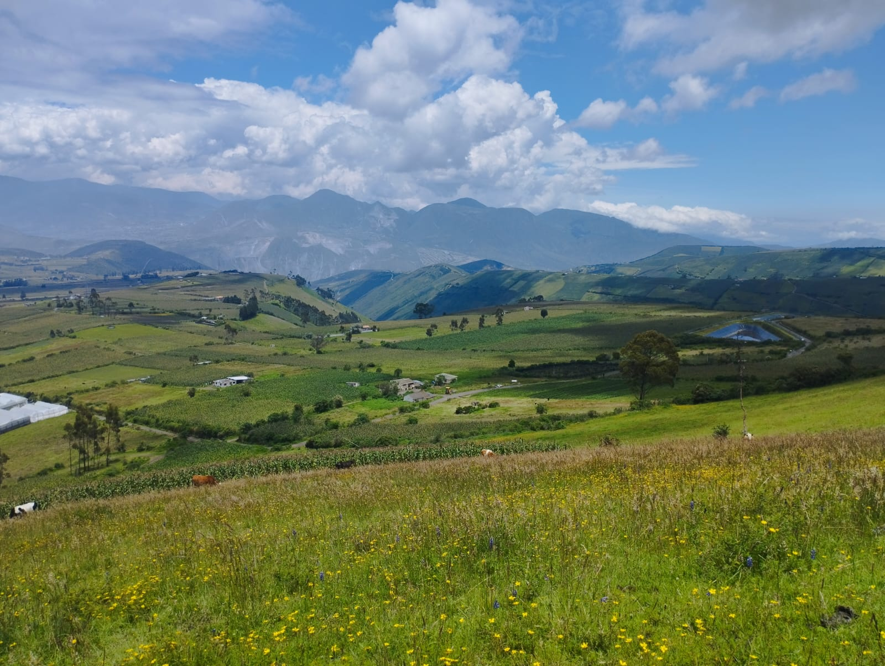
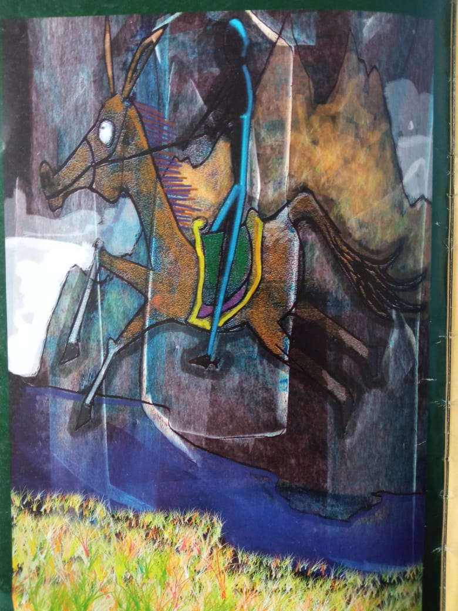
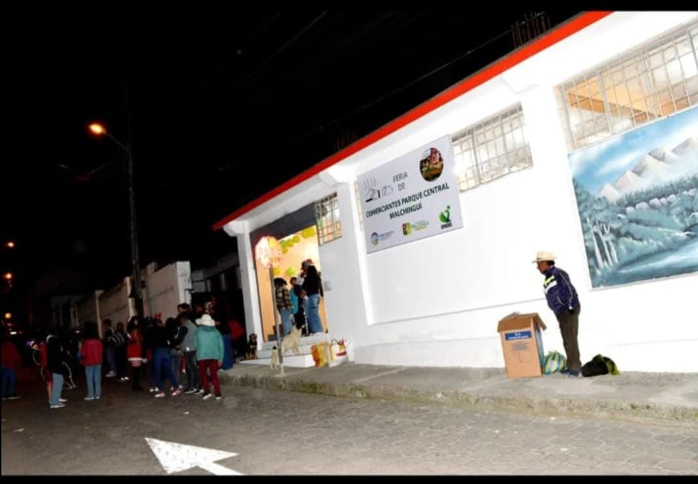
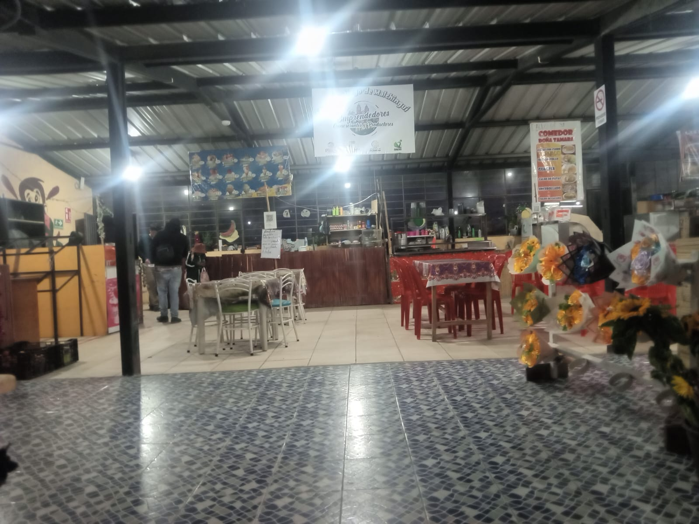
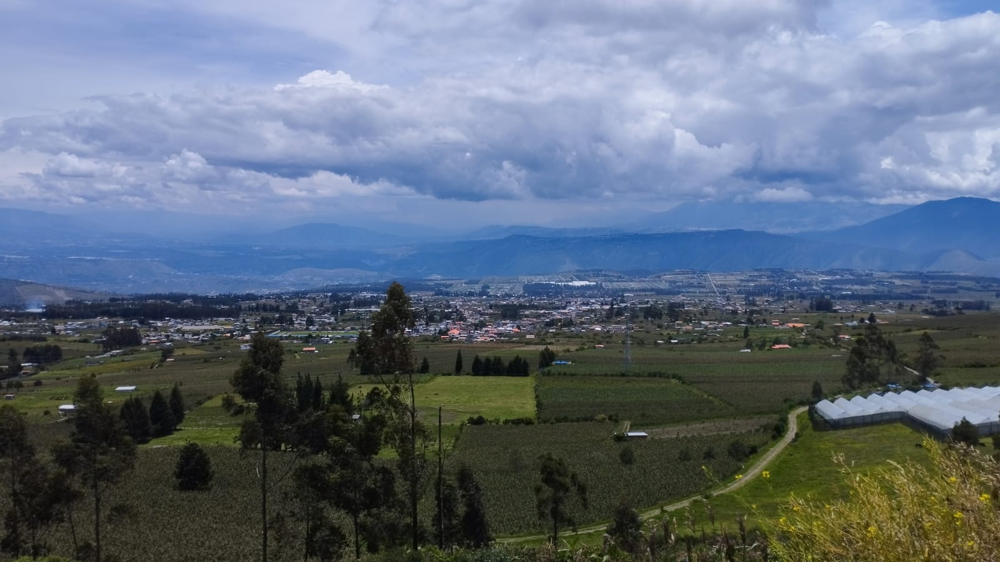
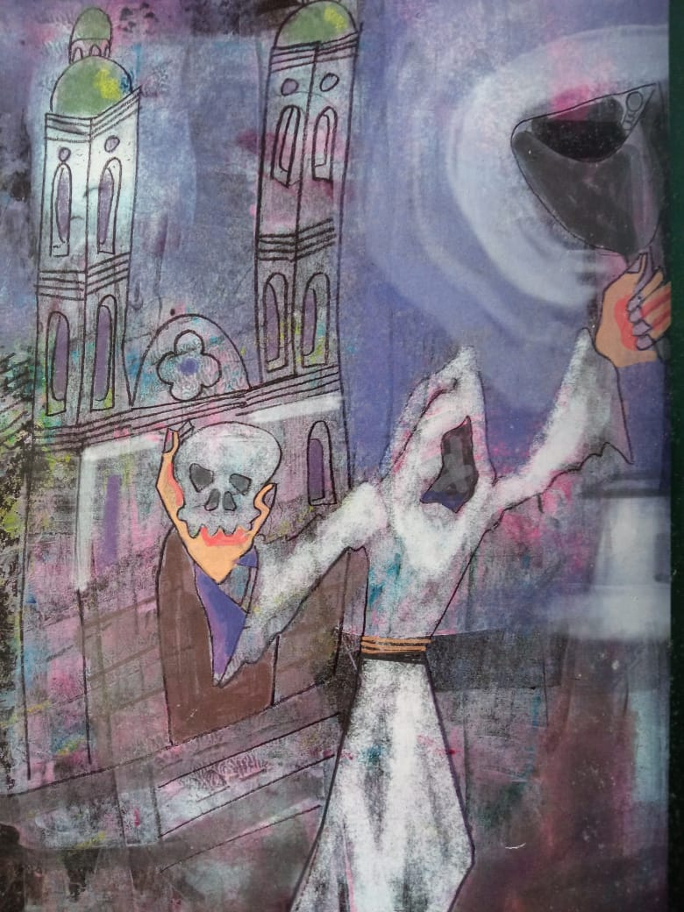
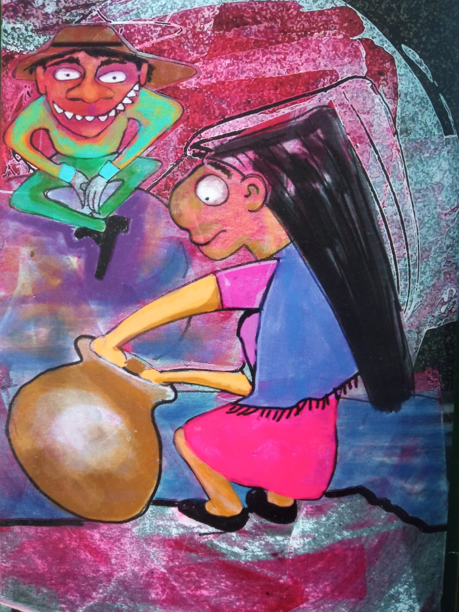

Ideal para respirar distinto, hacer fotografía, caminar con calma y observar un entorno abierto que cambia con la luz del día.
Turismo andino con identidad propia
Descubre Malchinguí entre altura, cultura y leyendas.
Muy cerca de Quito, Malchinguí combina paisajes abiertos, mercados llenos de sabor, miradores, caminatas y relatos que siguen vivos en la memoria de su gente.
Tiempo desde Quito
45 min
Altitud
2.400 msnm
Experiencia
Naturaleza + cultura
Por qué visitar
Un destino pequeño que se siente grande
La experiencia de Malchinguí no depende de una sola atracción. Se disfruta mejor como un conjunto: paisaje, comida local, aire limpio, caminatas y tradiciones que dejan huella.
Los mercados ofrecen una forma directa de conocer el ritmo local, conversar con la gente y probar comida tradicional sin prisa.
Las historias de campanas, almas, duendes y castigos convierten la visita en algo más profundo que una simple parada turística.
Lugares
Paradas que vale la pena recorrer
Estos espacios ayudan a entender la variedad de Malchinguí: naturaleza protegida, panoramas amplios y vida cotidiana con identidad propia. Los tiempos son referenciales en vehículo y pueden variar según el tráfico o el clima.

Bosque Protector Jerusalem
Uno de los espacios naturales más valiosos de la zona. Su ecosistema de bosque seco andino ofrece senderos, observación del paisaje y una oportunidad real de conectar con el entorno de manera tranquila y educativa.
Tiempo estimado
45 a 55 min desde Quito y 12 a 15 min desde el centro de Malchinguí.
Cómo llegar
En auto, ve por la Panamericana Norte, toma el desvío Pisque - Puéllaro y sigue la señalización al Bosque Jerusalem. En bus, puedes salir desde La Ofelia hacia Guayllabamba y luego tomar una camioneta hasta el ingreso.

Mirador del Campanario
Un punto ideal para observar la parroquia y sentir el carácter abierto del territorio. La visita gana fuerza cuando se combina con las leyendas locales que hablan de campanas perdidas y noches de eco.
Tiempo estimado
50 a 60 min desde Quito y 8 a 10 min en auto desde el centro parroquial; a pie puede tomar 20 a 30 min.
Cómo llegar
Desde el centro de Malchinguí, la vía local asciende hacia la meseta del campanario. El tramo final es corto y atraviesa un camino vecinal.

Centro parroquial y entorno local
Recorrer el centro permite entender la escala del lugar: comercio cercano, ritmo tranquilo y una vida comunitaria que hace que el viaje se sienta humano, no solo visual.
Tiempo estimado
45 min desde Quito y 0 a 5 min una vez que llegas a Malchinguí.
Cómo llegar
Ingresa por la vía principal de la parroquia y ubica el parque central. Desde ese punto puedes recorrer a pie la iglesia, el comercio y el entorno local.

Ruta visual hacia Mojanda
Aunque la experiencia principal está en Malchinguí, los paisajes de la zona y sus relatos vinculados a Mojanda amplían el recorrido con una sensación más andina y legendaria.
Tiempo estimado
1 h 30 min a 1 h 50 min desde Quito y 40 a 50 min desde Malchinguí en vehículo.
Cómo llegar
Sal desde Malchinguí hacia la Panamericana Norte en dirección a Tabacundo y continúa por la vía de acceso a Mojanda. El tramo final es de tierra, por lo que se recomienda ir en vehículo alto o con precaución en temporada de lluvia.
Terrenos
Catálogo real de terrenos disponibles en Malchinguí
Terrenos disponibles en Malchinguí con información de precio, metraje y ubicación para consultar opciones de compra.
Terreno de 3.030 m2 a dos cuadras del centro del poblado. El aviso indica cerramiento propio, servicios básicos, agua de riego y una pequeña construcción con cocina, sala, dormitorio y baño.
3.030 m2
Cerca del centro
Uso agrícola o vivienda
Fuente: Plusvalía, aviso "Venta Terreno Malchingui, Buena Esperanza 3030 m2".
Proyecto ubicado en la calle Pedro Moncayo y García Moreno, a tres cuadras del parque central. Publica lotes planos desde 200 m2 hasta 260 m2 con escrituras individuales y financiamiento directo.
200 a 260 m2
Agua, luz y alcantarillado
Calles adoquinadas
Fuente: Plusvalía, aviso "Terrenos en Venta en Malchinguí - Desde $13.500".
Terreno de 906 m2 en conjunto residencial, a 10 minutos del pueblo y a 2 minutos de la avenida principal. El aviso destaca seguridad, piscina, canchas, áreas BBQ y uso residencial urbano.
906 m2
Seguridad y amenidades
Servicios básicos
Fuente: Plusvalía, aviso "Terreno en Malchinguí".
Terreno plano de 900 m2, descrito como esquinero y con vista hacia Cotopaxi, Ilinizas y Cayambe. El anuncio menciona agua potable, alcantarillado, electricidad y potencial para proyecto residencial o Airbnb.
900 m2
Servicios completos
Ideal para inversión
Fuente: Plusvalía, aviso "Terreno Esquinero de Venta en Malchingui".
Sabores
La cocina local también forma parte del viaje
Los mercados no solo sirven para comer: son espacios para ver cómo se mueve la comunidad y sentir el pulso cotidiano del lugar.

Mercado del parque
Un punto perfecto para acercarse a sabores auténticos, platos caseros y conversaciones sencillas. El valor está tanto en la comida como en el ambiente de cercanía.

Mercado de las cuatro esquinas
Colores, productos frescos y movimiento constante. Es una parada sencilla, pero muy eficaz para entender el carácter comercial y gastronómico de la parroquia.
Actividades
Ideas para disfrutar la visita sin apuro
Malchinguí funciona muy bien para planes de media jornada o de día completo, especialmente si se mezclan paisaje, comida y un cierre cultural.
Rutas y recorridos con panoramas amplios que invitan a caminar sin necesidad de una logística complicada.
La combinación de cerros, cielos abiertos, mercados y texturas urbanas genera escenas muy fotogénicas.
El mejor cierre del recorrido es entrar a la experiencia interactiva y conectar los espacios reales con las historias del lugar.
Galería
Un vistazo rápido al ambiente de Malchinguí
Toca cualquier imagen para verla en grande. La galería combina naturaleza, vida cotidiana y rincones que construyen la identidad del lugar.



Leyendas
La parte más memorable del viaje puede empezar aquí
Estas historias le dan carácter a Malchinguí. La nueva experiencia interactiva convierte la visita en un recorrido con decisiones, desbloqueos y archivo narrativo.
Leyenda del campanario
Una campana desaparecida sigue resonando en la memoria del pueblo y en la imaginación de quienes la buscan.
Las lagunas de Mojanda
Un relato de orgullo, castigo y paisaje que transforma el territorio en una advertencia viva.
El Animero
Una presencia nocturna que mezcla penitencia, miedo y respeto por lo que no se debe desafiar.
Mapa
Ruta por carretera para llegar a Malchinguí
Este mapa intenta trazar la ruta vial real entre Quito y Malchinguí usando caminos y carreteras. Si el servicio de cálculo no responde, se mostrará una referencia visual de respaldo.
Ruta sugerida
Salida desde Quito, conexión por la Panamericana Norte y acceso vial hacia Malchinguí con un trazo calculado sobre carreteras reales.
Calculando ruta exacta por carretera...
Plan rápido
Mirador o bosque, mercado para almorzar, paseo por el centro y cierre con la experiencia de leyendas.
Recomendación
El sitio funciona especialmente bien con ropa cómoda, batería cargada para fotos y tiempo suficiente para quedarse un poco más de lo planeado.
Reseñas
Comparte tu experiencia
Las reseñas se guardan solo en este navegador para que puedas usar la página como una bitácora sencilla del proyecto.
Acceso
Lleva la experiencia en el teléfono
El proyecto también puede abrirse desde otros dispositivos. El QR es una forma rápida de compartirlo durante presentaciones o recorridos guiados.
Cada carga de esta página suma una visita local. Sirve como referencia simple para demostraciones y pruebas del proyecto.
Comparte el sitio
Escanea el código para abrir el proyecto desde otro dispositivo y recorrer mapa, turismo y leyendas sin buscar la dirección manualmente.